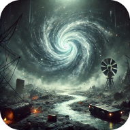
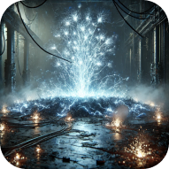
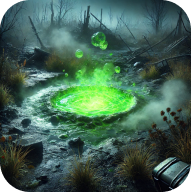

Mutants
Вихор

- Опис: Смерч із невидимих сил, що може підкидати об'єкти або людей у повітря.
- Загальні свідчення: Чутно характерний свист і шум у повітрі. Зазвичай знаходиться на відкритих місцях.
- Образ життя і поведінка: Створює пастки для сталкерів. Небезпечна, але в її центрі можна знайти цінні артефакти.
Кисіль

- Опис: Хімічна аномалія, яка виглядає як калюжа із зеленим світінням.
- Загальні свідчення: У її зоні дія швидко псується захисний костюм.
- Образ життя і поведінка: Притягує сталкерів через артефакти, але може отруїти або пошкодити тіло. Примітка: Часто з'являється поблизу місць із високою радіацією.
Електра

- Опис: Аномалія, яка генерує електричні розряди.
- Загальні свідчення: Зазвичай чути тріскіт струму та видно блакитне мерехтіння.
- Образ життя і поведінка: Активується при наближенні. Може пошкодити обладнання сталкера. Часто зустрічається біля дротів чи генераторів.
Трамплін

- Опис: Теплова аномалія, яка обпалює все навколо.
- Загальні свідчення: Видно хвилі гарячого повітря або характерне мерехтіння.
- Образ життя і поведінка: Непередбачувана, але її гаряча зона часто приховує артефакти. Часто активується лише в моменти руху поблизу.
Жарка

- Опис: Теплова аномалія, яка обпалює все навколо.
- Загальні свідчення: Видно хвилі гарячого повітря або характерне мерехтіння.
- Образ життя і поведінка: Непередбачувана, але її гаряча зона часто приховує артефакти. Часто активується лише в моменти руху поблизу